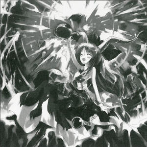
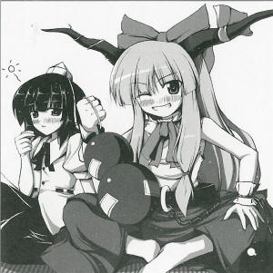

The Midwinter Moon's Great Explosion
Fragments of Moon Showering as SnowOn the ○○○th of ○○○, I became aware that the Moon had suddenly and silently exploded.
Although this was a major event, it occurred so late at night that most people never realized it happened.
The Moon quietly scattered out across the sky, and its countless glimmering fragments descended to the Earth.
Before long, the fragments thinned out like mist, and then gathered together again to reform the full moon.
Since this happened silently over a very short period of time in the middle of the night, it was a stroke of the greatest fortune to bear witness to this fantastically unreal spectacle.
Setting out to find out what had happened, I was able to gather enough information to allow me to make contact with the individual who caused the Moon to explode.
That individual was Suika Ibuki (oni).
She appeared to be extraordinarily drunk, but she spoke quite lucidly when I asked her about this incident.
The Moon? Ah, that was a threat, a simple threat. Everyone looked like they were having so much fun, saying 'onis out, onis out' over and over, so I thought I'd just come back with a little threat. It looks like you were really surprised, though.
I was indeed surprised, as I'm sure anyone would be.
I then asked her how she'd made the Moon explode.
Just what do you think the moon up in the sky is? Everyone sees that big, round shiny thing and thinks there must be something round up there, right? That's just silly. The truth is much more awesome than that. You can almost never see the real Moon, and its appearance is death to humans. You can only see the Moon when it's reflected in things. And the things it reflects in, like water or glass, can all be broken, right? Since the moon you see in the sky is just being reflected in the heavens, if you tear open the heavens it's easy to break it~
I understood how she'd broken the Moon, but it was unclear how she'd managed to shatter the heavens.
Still, the power of the oni defies imagination.
They can probably shatter the heavens with their eyes closed and one hand tied behind their back.
AD: Tengu's Rice with Barley - for Nutritional Fortification, Fatigue Relief, Snack for Adult
 Suika
Sake please~
Aya
You've just been drinking the whole time.
Suika
The whole time? Look, I've been drinking non-stop for hundreds of years. The last time I was sober is a tale from the far past~
Aya
I suppose it's too late to say that drinking that much might be bad for your health...
Suika
Wanna have a drinking match?
Aya
Please, I'm not foolish enough to get into a drinking match with an oni.
Suika
Aw, come on~ You're a tengu, right? Tengu are pretty big drinkers, too~
Aya
Ohoho. I'm on the job at the moment. Still, I found a nice food cart recently; would you like to go for a drink afterwards?
Suika
Food cart? Maybe it's a yakitori cart~
Aya
Grilled eel, I'm afraid. Their vegetable and meat skewers are the best as drink chasers.
Suika
Sounds nice. Parties are great, but maybe it's best to sit and drink quietly once in a while.
Aya
This cart isn't the quietest place, I'm afraid...the owner sings a lot.
Suika
If she's so noisy I can't drink, I'll just make her shut up.
Aya
Hm, hearing that from an oni...makes me feel sorry for the poor bird. Still, I was very surprised. That matter of the Moon is one thing, but I didn't think there were any oni left in Gensokyo.
Suika
Oh, well, I came back for a while. I'm the only one, though~
Aya
Gensokyo might become even more lively with an oni around.
Suika
I was sad to see the tengu had lost their hold on the world~
Aya
Please, you're exaggerating. The tengu would never do such a thing. Besides, such power is usually the purview of the oni.
Suika
I see you tengu are all talk, same as ever. You've always been humble to anyone stronger than you, and assertive towards the weak. You're actually really strong, but you go easy on everyone, and you play dumb even though you're really smart. You're all so sly. What opportunists.
Aya
Please, you don't have to go that far. We tengu really aren't as strong as we used to be. We're merely simple rumormongers, nowadays.
Suika
Hm, I wonder how serious you are? Well, I see you all still love gossip as much as you did in the old days.
Aya
And I see the oni are still amazing. It's very unusual to be able to shatter the heavens.
Suika
Ehehe, that's just a little trick. I'm good at diffusing and gathering things.
Aya
Oh, does that mean you'd also be good at gathering news?
Suika
Huh? N-news? O-of course, I could do that with my little finger.
Aya
Oh, that's amazing~. Why don't we go off to that cart and continue this conversation over a drink? I'm sure you have a lot of interesting things to tell me.
Suika
Sure. Tonight, we'll drink until we can't talk anymore!
Aya
Ohoho, but I'm a tengu, you know? If I get so smashed I can't hear you talk anymore...hahahahaha
Suika
This is why they say, Never get too close to tengu.
Profile:
Suika Ibuki
One of the oni, who have left in Gensokyo.
Light-hearted and fond of alcohol.
She was unhappy about drinking parties decreasing owing to Yuyuko, so she made Marisa and her friends give parties for three days.
Appearances:
Immaterial and Missing Power